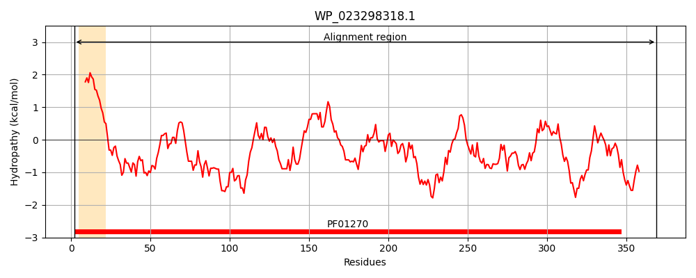
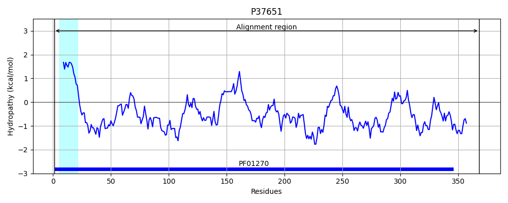
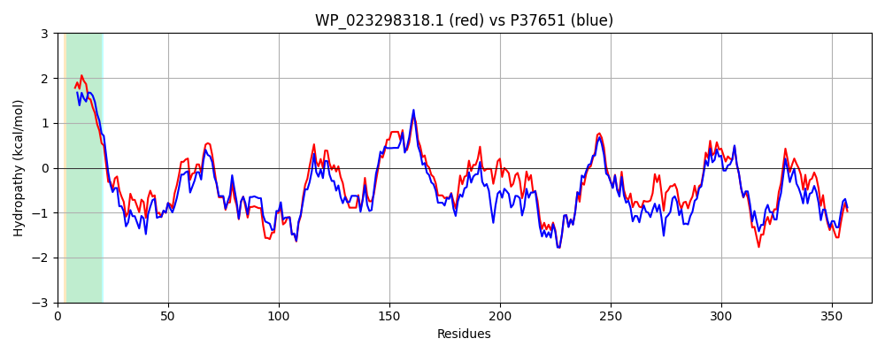

Hit Accession: P37651
Hit TCID: 4.D.3.1.6
Hit Description: gnl|BL_ORD_ID|10121 gnl|TC-DB|P37651|4.D.3.1.6 Endoglucanase OS=Escherichia coli (strain K12) GN=bcsZ PE=1 SV=1
Mach Len: 368
e:0.000000
Query TMS Count : 1
Hit TMS Count: 1
TMS-Overlap Score: 0.850000
Predicted Substrates:CHEBI:3529;(1->4)-beta-D-glucan
BLAST Alignment:
Score: 1488 , Bit scores: 577 bits, E-value: 0.0e+00, Alignment length: 368, Percentage identity: 72
Query: 2 MKVLCGAVLSALLLAAGPVSAACQWPAWEQFKKAYVSPEGRVIDPSDARKISTSEGQSYGLFFALAANDRAGFDKLLTWTQNNLAEGDLRQHLPGWLWGKKDDEQWTLLDSNSASDSDLWIAWALLEAGRLWQQPQYTETGKALLARIVEEETVAVPGLGTMLLPGKVGFADDSGWRFNPSYLPPQLATYFVRFGAPWPALRDSNLRLLLETAPKGFTPDWVRYEKGKGWQLKTEKPLIGSYDAIRVYLWVGMLHDGDKQKARLLQRFAPMAAQTTEQGVPPEKVNIATGKTSGQGPVGFSAVMLPFLQDDEARSVQRQRVADNYPGADAYYSAVLTLFGQGWDQHRFRFTAGGELQPDWNQECASSH 369
M VL +++ LLLAA V AAC WPAWEQFKK Y+S EGRVIDPSDARKI+TSEGQSYG+F ALAANDRA FD +L WTQNNLA+G L++ LP WLWGKK++ +W +LDSNSASD D+W+AW+LLEAGRLW++ +YT+ G ALL RI EE V VPGLG+MLLPGKVGFA+D+ WRFNPSYLPP LA YF RFGAPW LR++N RLLLETAPKGF+PDWVRYEK KGWQLK EK LI SYDAIRVY+WVGM+ D D QKAR+L RF PMA T + G PPEKV++ATGK G+GPVGFSA MLPFLQ+ +A++VQRQRVADN+PG+DAYY+ VLTLFGQGWDQHRFRF+ GEL PDW QECA+SH
Sbjct: 1 MNVLRSGIVTMLLLAAFSVQAACTWPAWEQFKKDYISQEGRVIDPSDARKITTSEGQSYGMFSALAANDRAAFDNILDWTQNNLAQGSLKERLPAWLWGKKENSKWEVLDSNSASDGDVWMAWSLLEAGRLWKEQRYTDIGSALLKRIAREEVVTVPGLGSMLLPGKVGFAEDNSWRFNPSYLPPTLAQYFTRFGAPWTTLRETNQRLLLETAPKGFSPDWVRYEKDKGWQLKAEKTLISSYDAIRVYMWVGMMPDSDPQKARMLNRFKPMATFTEKNGYPPEKVDVATGKAQGKGPVGFSAAMLPFLQNRDAQAVQRQRVADNFPGSDAYYNYVLTLFGQGWDQHRFRFSTKGELLPDWGQECANSH 368 | Protein Hydropathy Plots: |
|---|
|  |  |
Pairwise Alignment-Hydropathy Plot:
|
|---|
|  |